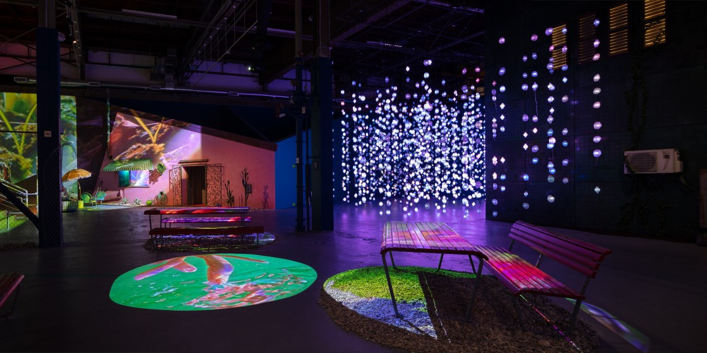
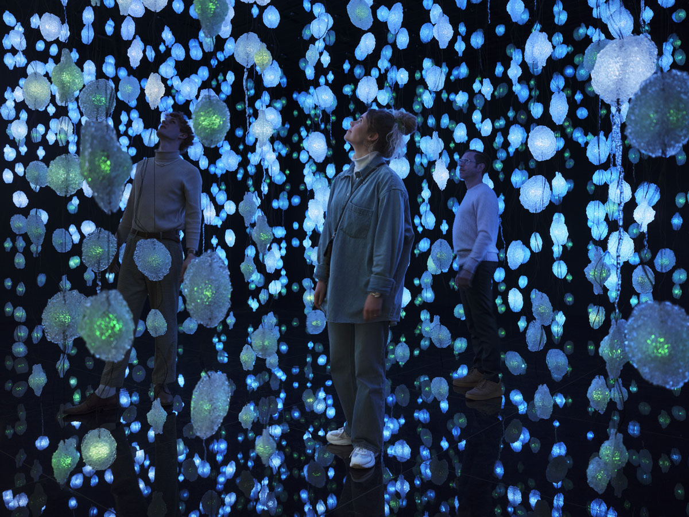
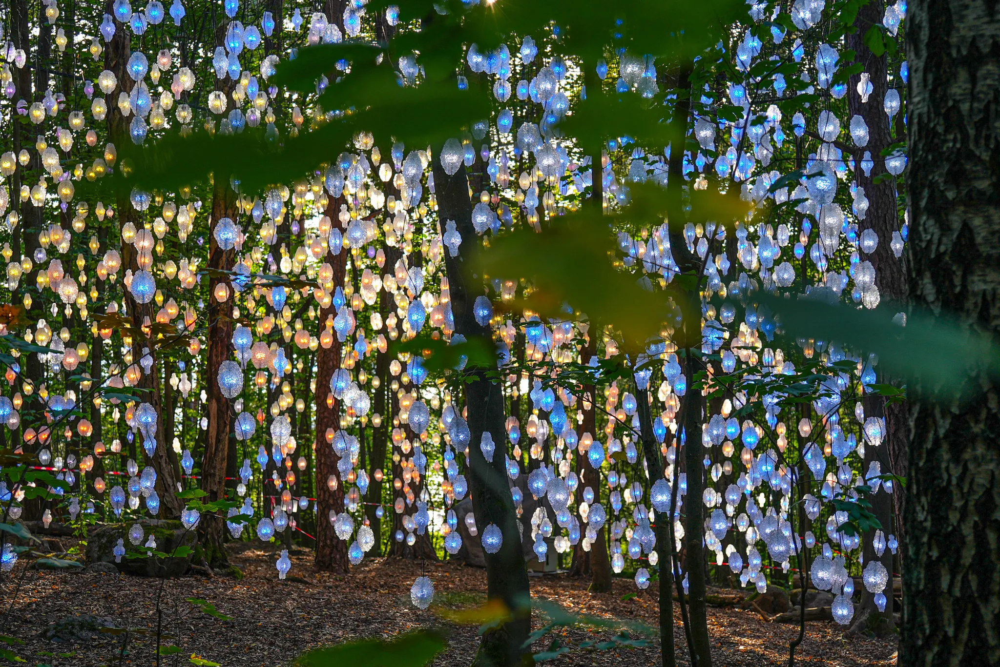
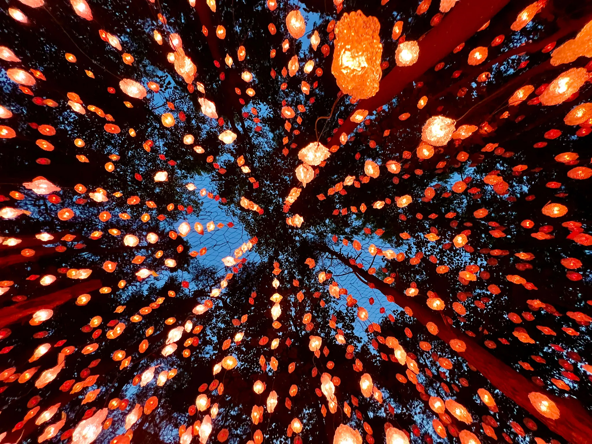
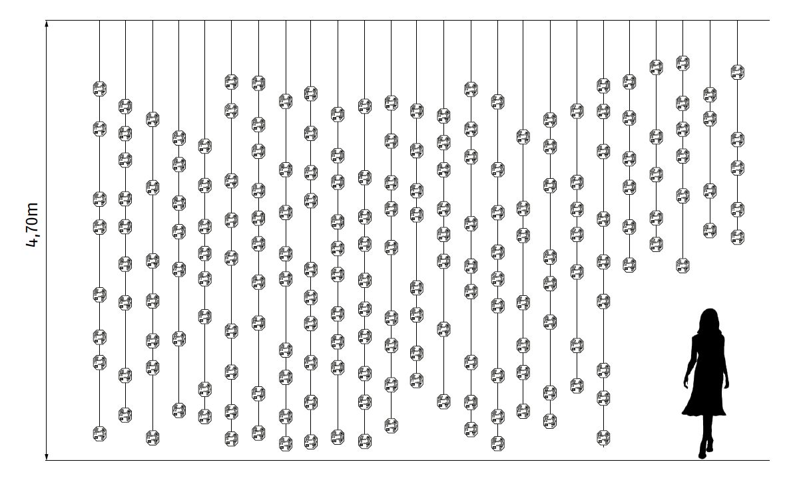
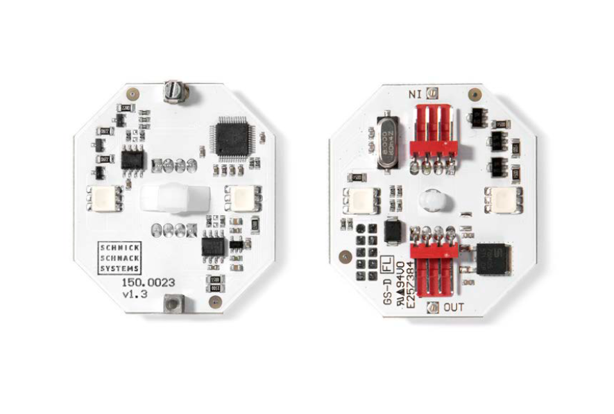
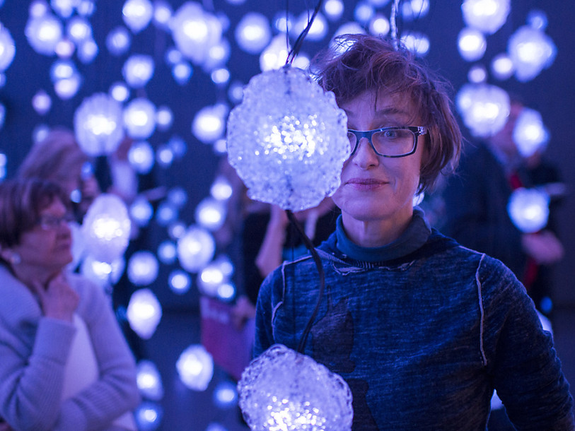

Pixelwald
Audio-, Video- und Lichtinstallation von Pipilotti Rist
«Der in den Raum explodierende Bildschirm.»
Pixelwald ist eine Video- und Lichtinstallation mit etwa 3000 einzeln ansteuerbaren LED-Elementen in den Farben Pink, Blau, Rot, Orange, Grün und dunkleren Schattierungen von Karminrot, Magenta und Braun. Diese hängen an Kabeln von der Decke, die an Lianen erinnern. Da die Leuchtdioden individuell steuerbar sind, verändert der Wald sich ständig. Das Publikum erkennt inmitten der Installation ein farbiges Blinken und Leuchten, einzelne Bildpunkte (Pixel). Das Bild ist zersplittert, erst aus sehr grosser Entfernung würde das Auge die Pixel zu einem Ganzen kombinieren. In einem Gespräch mit Bice Curiger nannte Rist die Arbeit «die ironische Idee eines Monitors, der in einem Raum explodiert».Rist entwickelte das Video zusammen mit der Lichtdesignerin Kaori Kuwabara. Der Pixelwald besteht aus 3000 winzigen Leuchtdioden mit einem Gehäuse aus Polycarbonat, von denen jede einzeln über ein Videosignal gesteuert werden kann. Auf diese Weise erzeugen die Lichter ein fragmentiertes, aber erkennbares Videobild. Wenn man mindestens 200 Meter davon zurücktreten könnte, würde man eine unscharfe Form erkennen können.

«Eine digitale Landschaft, die man mit dem Körper durchqueren kann.»

«Natürlich, leuchtend, beweglich wie das Lichtspiel eines Waldes.»


Installation

Wie die Äste einer Trauerweide hängen die einzelnen LED-Lianen des Pixelwaldes von der Decke. Keine gleicht der anderen, jede ist individuell. Die LED-Technolgie, die sie zum Glühen und Leuchten bringt, musste besonders leistungsfähig und flexibel sein. So galt es, jeden einzelnen Lichtpunkt des Pixelwaldes individuell mit Videoinhalten zu bespielen. Auch sollten die Lichtpunkte mit den Videoinhalten an den Wänden des Raumes korresponieren, um einen unablässigen visuellen Strom und einen natürlichen Gesamteindruck zu erzielen. Höchste Flexibilität war also gefragt ebenso übrigens in Sachen Beweglichkeit. Denn die Besucher sollten sich frei im Pixelwald orientieren können, ohne dass sich ihnen starre Installationen in den Weg stellten.

Die technischen Ansprüche des Kunstwerks standen damit schnell fest:
- LED-Dot RGB
- Mindestens 5,4lm Lichtstrom bei 100%
- Mindestens 2,5cd Lichtstärke
- Abstrahlwinkel von mindestens 360°(2 × 120 - 140°)
- Videosteuerbarkeit
- Hohe Farbechtheit
- Hohe Lebensdauer aller Lichtelemente
- Verkettung der einzelnen LED-Elemente mit Hilfe dünner, schwarzer Kabel mit Einzeladern
- Variable Pitch-Abstände von 300mm, 500mm und 800mm
- Ansteuerung aller Lichtelemente durch eine zentrale Lichtsteuerungseinheit

Pipilotti Rist
Pipilotti Elisabeth Rist (21. Juni 1962 in Grabs; heimatberechtigt in Altstätten; bürgerlich Elisabeth Charlotte Rist) ist eine Schweizer Videokünstlerin, die internationale Bedeutung erlangt hat. Rist hat als Pionierin im Umgang mit ihren Medien, vor allem Video und Film, einen eigenen, unverkennbaren Ausdruck gefunden. Neben Videoinstallationen und Experimentalfilmen gehören zu ihren Arbeiten auch Environments, Objekte, Computerkunst und digitale Fotomontagen. Schwerpunkte ihres medienreflexiven und sinnlichen Werks sind der menschliche Körper und die Weiterentwicklung der Videotechnik. Dabei passte Rist sich an den jeweiligen Stand der Technik an: Anfangs arbeitete sie mit Magnetvideobändern, später mit Super-8-Filmen, und schliesslich ging sie zur digitalen Videotechnik über. Die Bilder wurden anfangs auf Fernsehbildschirmen wiedergegeben, später projizierte Rist sie auf Wände, Grossleinwände, ganze Ausstellungsräume und Objekte. Dies zielte darauf ab, das Publikum in das Kunstwerk zu integrieren. Musik und Ton haben in Rists Werk eine grosse Bedeutung. Ihre zahlreichen Arbeiten, die über einen Zeitraum von fast 40 Jahren entstanden, werden weltweit ausgestellt. Zu ihren bekanntesten Werken gehören die Videos I’m Not The Girl Who Misses Much (1986) und Ever Is Over All (1997). Ein Teil ihrer Kunstwerke befindet sich im öffentlichen Raum, so etwa Stadtlounge (seit 2005), eine Platz- und Strassengestaltung in Sankt Gallen, und Monochrome Rose (seit 2016), ein von ihr gestalteter Tram-Zug in rosa in Genf. Rist vertrat ihr Heimatland zweimal auf der Biennale di Venezia, 1997 und 2005.
Credits
Idee, Konzept, Regie und Schnitt
Pipilotti Rist - pipilottirist.net
Lichtdesign, Konzeption, Entwicklung
Kaori Kuwabara, dipl. Lichtdesignerin SLG. Am Wasser 55, 8049 Zürich (Schweiz)
Partner
Atelier Rist GmbH. Zypressenstrasse 76,8004 Zürich (Schweiz)
Header of Technique: David Lang
Head of Studio: Tamara Siegrist-Voser
Hauser & Wirth. Limmatstrasse 270,8005 Zürich (Schweiz)
Pipilotti Rist @ 2026. All rights reserved.